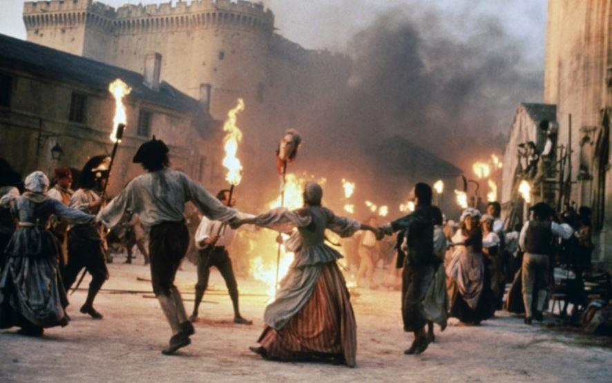
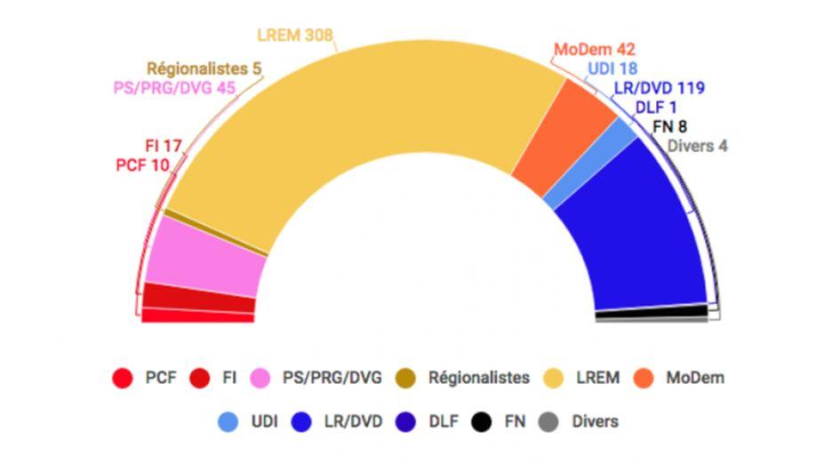
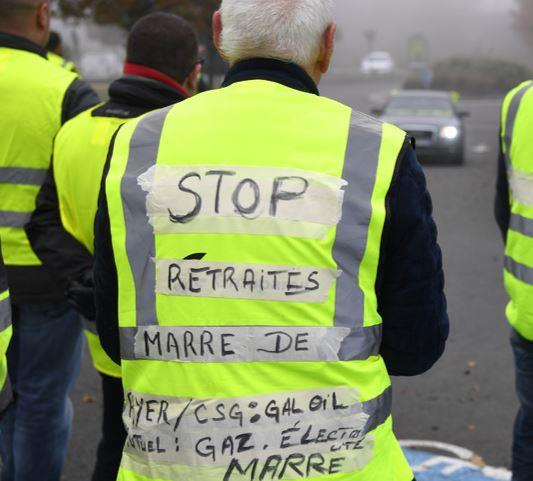

J’ai écrit l’article « Révolution et résistance, et le peuple dans tout cela ? 1» le 20 octobre, Relisez-le ! Le mouvement gilet jaune a commencé début novembre.
Depuis la colère du peuple a pris une forme inédite, elle repose sur un sentiment d’injustice profond.
La gouvernance Macron qui se voulait sûre de sa légitimité, ne repose en fait sur aucune structure ancrée dans les territoires. La représentation nationale issue du scrutin lui a donné une assise fragile, car les députés élus sont pour la plupart inexpérimentés, urbains, surdiplômés, mais qui très vite, sont tombés dans une forme de condescendance, ivres de leurs nouveaux pouvoirs.
Ils sont le résultat d’un système électoral qui ne correspond pas au pays réel. Les citoyens ne se sentent pas représentés, c’est le péché originel de V° République qui n’a pas su introduire suffisamment de proportionnelle pour rectifier ce qui est ressenti désormais comme une injustice.
La République en Marche a obtenu une large majorité avec 302 députés élus à l'issue des élections législatives 2017. Or, les élections législatives auront été marquées par un taux d'abstention record : 51,3 % au 1er tour et 57.36 % au second tour. Le président de la République, Emmanuel Macron, élu par défaut avec 66,1 % des votes exprimés le 7 mai 2017, dispose donc d'une large majorité à l'assemblée nationale. Il se pensait intouchable il est en fait extrêmement fragile, car cette majorité n’est que de façade, elle ne représente pas la réalité du corps électoral. Un rappel est nécessaire :
Résultats du 2nd tour en % de votes, et leur traduction en sièges à l’Assemblée Nationale.
4.86 % des votes La France insoumise 17 sièges
1.21 % des votes PCF - Parti communiste français 10 sièges
5.67 % des votes PS - Parti socialiste 30 sièges
1.47 % des votes Divers gauche 12 sièges
0.14 % des votes PRG - Parti radical de gauche 3 sièges
0.11 % des votes Écologiste 1 siège
42.89 % des votes En Marche! 308 sièges
6.04 % des votes MoDEM - Mouvement démocrate 42 siège
3.02 % des votes UDI - Union des Démocrates et Indépendants 18 siège
1.68 % des votes Divers droite 6 sièges
22.35 % des votes LR - Les Républicains 112 sièges
0.1 % des votes DLF - Debout la France 1 siège
8.85 % des votes FN - Front national 8 sièges
0.1 % des votes Extrême droite 1 siège
0.76 % des votes Régionaliste 5 sièges
0.52 % des votes Indépendant – Divers 3 sièges
Il faut tout de même réfléchir quel que soit son opinion ou sa sensibilité à cette forme d’injustice. Le FN devenu RN, a obtenu 8 sièges pour 8.95 % des votes alors que le parti communiste lui, a obtenu 10 sièges pour 1.21 % des votes ... C’est un fait. On pourrait peut-être aussi souligner les 42 sièges du MODEM, pour 6,04 % des votes.
Une démocratie ne peut fonctionner de cette manière, ou alors, il ne faut pas s’étonner que le peuple ne puisse finalement, compte tenu de la faiblesse d’un tel parlement aux ordres de l’Élysée, n'avoir que le choix de s’adresser directement à Jupiter.
Le peuple en son langage maladroit, mais c’est la peuple, ce peuple que l’on ne souhaitait pas voir et qui a revêtu un gilet jaune pour se rendre visible, n’a pas d’autres solutions que celle de s’adresser, sans filtre, directement à celui qui a voulu être le roi. Qu’il en assume le risque !
Et ce peuple est appuyé par une très grande majorité des Français.
Mais c’est une révolte ? — Non, Sire, c’est une révolution ! »
Cette révolte est probablement une révolution, car elle pointe du doigt les manquements aux fondements de notre devise inscrite aux frontons de nos bâtiments officiels : Liberté - Egalite - Fraternité. La Liberté que nous avons perdue, l’Égalité qui n’est que bafouée, mais la Fraternité qui est en train de renaitre.
Cette révolte est née d’un sentiment d’injustice profond, qui a été renforcé par des mesures prises d’en haut sans discernement, sans écouter les élus des territoires et imposés de manière autoritaire par un Premier ministre trop intelligent pour sa fonction.
- Le 80 km/h venu d'en haut et l’annonce de la mise en place de radars supplémentaires ressentis comme un racket.
- Le renforcement des contrôles techniques et le surenchérissement des taxes liées à l’automobile. La taxe carbone avec une trajectoire annoncée sur le quinquennat.
- L’augmentation de la CSG pour les retraités et le quasi blocage pour deux ans au moins de leurs retraites présentés de manière scandaleuse en se parjurant et en expliquant qu’ils devaient se serrer la ceinture pour que ceux qui travaillent puissent gagner plus. Comme si c’étaient eux les fautifs. Alors que les retraités souvent doivent travailler pour arrondir leur fin de mois, aident leurs enfants, participent à la vie associative bénévolement, sont des acteurs majeurs de la vie économique et se demandent comment ils vont financer leur fin de vie !
- La justification de l’augmentation des toutes les énergies sous prétexte d’une urgence climatique que personne ne conteste, mais qui est ressenti comme un prétexte pour taxer plus. Car, soyons précis, nous ne représentons que 0,95 % de la population mondiale et 7 % d’empreinte carbone en Europe. À titre de comparaison, l’Allemagne pèse 14 %. Demander ainsi à des smicards d'être solidaires de la lutte contre la pollution et de changer de véhicule avec des aides, relève d’un foutage de gueule absolu.
Quand bien même nous roulerions tous à l’électricité ou en trottinette, la bagnole ne représente que 0,005 % d’émission de CO2. Est-ce une justification pour nous taxer un peu plus ? Bien sûr que non, la cause est ailleurs. Il faut financer la quasi suppression de l’ISF pour les plus riches au prétexte d’un possible ruissèlement !!!
En fait, personne n'est dupe. Cette ponction fiscale est créée pour financer la suppression de la taxe d’habitation, combler le trou de la dette qui ne fait que se creuser, obéir aux diktats de cette Europe de la finance et des financiers qui nous préparent une nouvelle crise, afin de remettre tout ce bon petit peuple, inculte, ignare et sans langage, au pas.
Sauf que ce petit peuple a décidé de ne plus marcher à la schlag, mais demande sa part, sans menacer les nantis, mais en demandant simplement justice. Tout cela fait peur, c’est bien normal, les chiens sont lâchés, ils veulent un os, pas certains qu’ils rentrent à la niche avant de l’avoir obtenu.
Car, dans cette affaire, l’État est loin d’être exemplaire. Aucune de ses manœuvres de déconsidération du mouvement n’a réussi.
Le bon Castaner, qui dégaine une bêtise plus vite que son ombre, roi de la langue qui fourche, flanqué de ses acolytes, n’a réussi à rendre impopulaire un mouvement considéré à tort comme violent et infiltré par l’extrême droite. Pas de chance, c’est faux,
Lui, qui tout en nuances sait faire la différence entre un casseur de droite et un casseur de gauche, mais qui gaze ou canonne à eau le papy ou la mamie ou la mère de famille avec finesse, doigté et élégance. D'ailleurs, il faudrait revenir sur ce qui s’est réellement passé sur les Champs Élysées lors de cette journée du 24 novembre... Une commission d’enquête menée par le Sénat serait loin d’être inutile...
Quels ont été les ordres réels reçus par les forces de maintien de l'ordre en place ? Pourquoi avoir gazé les manifestants pacifiques, pourquoi avoir laissé rentrer les casseurs alors que depuis 48 h tout le monde en connaissait le risque ? Pourquoi avoir laissé un chantier ouvert avec des pavés en cours de restauration sans précaution... Négligence ou volonté de pourrir la manifestation ?
L’État, dans tous les cas, est responsable et de manière générale, il ne montre guère l’exemple. Il gère mal, dépense mal, entretient des hauts fonctionnaires en disponibilité, c’est-à-dire payés en ne faisant rien. C’est ce que l’on appelle un état failli.
Alors maintenant, que faut-il faire ? Car le péril de dérive du mouvement est fort.
Et bien, avez-vous ressenti le vent du boulet ou bien vous faut-il une autre preuve de l’urgence ?
Exemple de premières mesures à prendre tout de suite avant samedi.
- Moratoire sur toutes les hausses de taxes liées à l’énergie…
- Coup de pouce aux bas salaires, à la hauteur des 5 milliards de réduction accordée à ceux qui payent l’ISF compensé par un allègement massif des charges pour les petites entreprises.
- Réalignement de l’augmentation des retraites sur le coût de la vie.
- Défiscalisation des heures supplémentaires.
- Mise à plat des politiques fiscales, incluant l’ensemble des taxes sur les ménages.
- Taxation d’un certain nombre de produits fabriqués à l’étranger, en introduisant une dose de protectionnisme…
Ce sont des mesures d’urgence. Le reste viendra.
Toutes ces propositions vont se heurter aux règles supranationales européennes, car l’erreur a été celle de faire l’Europe de la finance avant de faire une Europe de convergence sociale, en évitant au nom d’intérêts mercantiles que celle-ci ne se protège de la mondialisation sauvage.
L’Asie, nous a d’ores et déjà dépassée, la révolution de l’intelligence artificielle est en marche, on a raté le premier train.
Si, messieurs qu’on nomme grands, vous ne souhaitez pas que le monde s’inverse et que la France devienne un jour le pays où nous n’aurons plus comme activité que celle de fabriquer des jeans et des tee-shirts, il faudrait, comme on dit de manière trivial chez nous, vous sortir les doigts du C...
Suis-je assez clair ? Mais cela ne peut se faire au détriment des trimards, qui ne sont ni vos serviteurs, ni vos sujets.
N’oubliez jamais, c’est vous qui êtes à notre service par la volonté du peuple.

Partager cette page